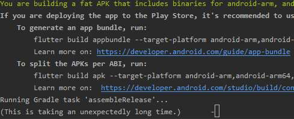

flutter 可以运行但是一直构建不了
- 作者:
- 淡白
- 创建时间：
- 2020-07-10 12:42:34
- Flutter
摘要：这篇文章记录了作者在使用Flutter构建项目时遇到的问题。作者尝试了多种方法来解决问题，包括清除构建缓存、删除构建文件夹、删除依赖缓存以及回滚代码版本等，但都没有成功。最终，作者决定删除整个项目文件夹并重新拉取代码，这次构建过程没有问题。尽管作者没有找到问题的根本原因，但问题得到了解决。
记录一个 Flutter build 问题
  昨天flutter项目里面的一个 SDK 升级了我去更新了一下版本。 然后在虚拟机里启动了一下查看更新效果。
  之后去 CMD futter build apk执行。结果先开始 CPU 利用率达到了80 - 100之后就没怎么占用了我以为在下载依赖但发现网速并没有上去。
就像这样：
等了十几分钟都没动。
解决之路
- 我尝试清除构建缓存
flutter clean❌ - 直接删除项目下
build文件夹 ❌ - 删除
C:\Users\DanBai\AppData\Local\Pub\Cache❌ - 将代码回滚至上个版本 ❌
- 将项目文件夹整个删除重新在 Github 重新拉取下来 ✔
  之后在项目中我又升级了依赖版本好在这次构建并没有问题一两分钟完事。在这期间都是能在模拟器运行的。虽然没能找到问题的根本，但问题是解决了。